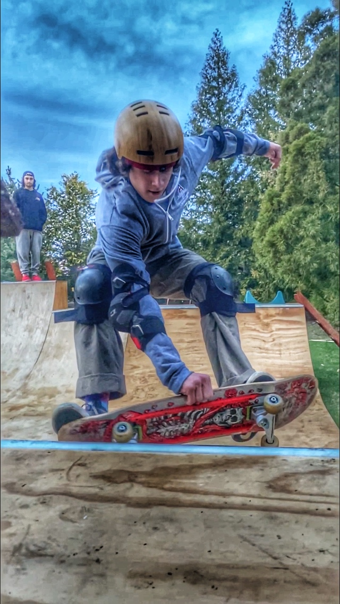

was born in 2001 in Boston. He grew up, and still resides on the North shore of MA like generations before him. He went to highschool at Avon Old Farms in CT, and will be atending college at CU Boulder in CO. AT Boulder he intends to major in Economics or Business and pursue a career in business. Caleb is also an outdoors enthusiast, skateboarder, skier, surfer & camper, & likes to spend his time in nature or by the seashore. On rainy days sometimes Caleb learns how to code from Mr. Sayles. Caleb can code sorting algorithms in Java, Apps on flutter & websites using HTML & bootstrap.
